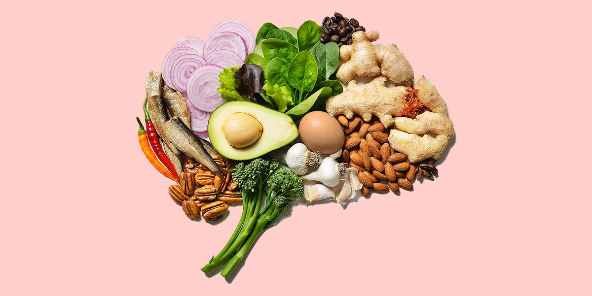
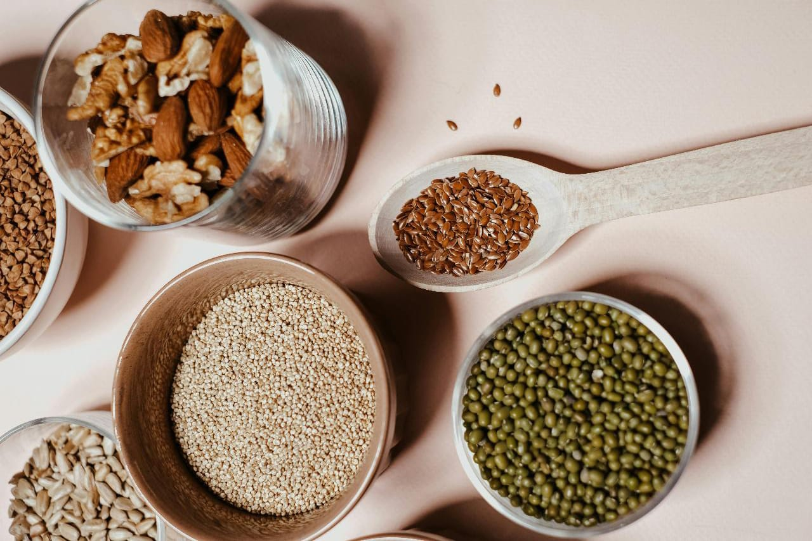

Nutritional Tips
1. Embrace Whole Foods
Tip: Opt for whole, unprocessed foods whenever possible.
Explanation: Whole foods are those that are closest to their natural state, free from added sugars, unhealthy fats, and artificial additives. They include fruits, vegetables, whole grains, lean proteins, and healthy fats. These foods are rich in essential nutrients such as vitamins, minerals, fiber, and antioxidants, which are vital for maintaining optimal health. Incorporating a variety of whole foods into your diet can improve digestion, boost your immune system, and reduce the risk of chronic diseases like heart disease, diabetes, and cancer.
2. Balance Your Plate
Tip: Aim for a balanced meal that includes a combination of carbohydrates, protein, and healthy fats.
Explanation: A balanced plate ensures that your body receives all the essential nutrients it needs for energy, growth, and repair. Carbohydrates provide a quick source of energy, protein supports muscle repair and growth, and healthy fats are crucial for brain health and hormone production. To create a balanced plate, fill half of it with fruits and vegetables, one-quarter with lean protein (such as chicken, fish, tofu, or beans), and one-quarter with whole grains (such as brown rice, quinoa, or whole-wheat pasta). This balance helps stabilize blood sugar levels, promotes satiety, and provides sustained energy throughout the day.
3. Mindful Eating
Tip: Practice mindful eating by paying attention to your body's hunger and fullness cues.
Explanation: Mindful eating involves being fully present during meals, which helps you tune into your body's signals and recognize true hunger and fullness. Avoid distractions while eating, such as watching TV or scrolling through your phone, and focus on the sensory experience of eating—savoring each bite, noticing the flavors, textures, and aromas of your food. Eating slowly allows you to fully enjoy your food and gives your brain time to register that you are full, preventing overeating. This practice can enhance your relationship with food, reduce emotional eating, and promote healthier eating habits.
4. Hydration is Key
Tip: Stay hydrated by drinking plenty of water throughout the day.
Explanation: Water is essential for nearly every bodily function, including digestion, nutrient absorption, and overall cellular function. It helps regulate body temperature, lubricate joints, and flush out toxins. Aim to drink at least 8 glasses of water daily, and more if you're physically active or live in a hot climate. To stay hydrated, carry a water bottle with you, drink a glass of water before each meal, and eat water-rich foods like cucumbers, oranges, and watermelon. Proper hydration can improve energy levels, cognitive function, and skin health.
5. Read Labels
Tip: When grocery shopping, read food labels carefully to understand what you're putting into your body.
Explanation: Food labels provide valuable information about the ingredients and nutritional content of packaged foods. Look for products with simple, recognizable ingredients and avoid items with long lists of artificial additives, preservatives, and high levels of sodium or added sugars. Pay attention to serving sizes, calories, and the amounts of saturated fat, trans fat, and cholesterol. By choosing products with healthier ingredients, you can reduce your intake of harmful substances and make more informed dietary choices that support your overall health.
6. Prioritize Fiber
Tip: Incorporate fiber-rich foods into your diet, such as fruits, vegetables, legumes, and whole grains.
Explanation: Fiber is a type of carbohydrate that the body cannot digest. It plays a crucial role in digestive health by adding bulk to the stool and promoting regular bowel movements. Fiber also helps regulate blood sugar levels, lower cholesterol, and maintain a healthy weight. Soluble fiber, found in foods like oats, apples, and beans, dissolves in water to form a gel-like substance that slows digestion and helps control blood sugar. Insoluble fiber, found in foods like whole wheat, nuts, and vegetables, adds bulk to the stool and aids in its passage through the digestive tract.